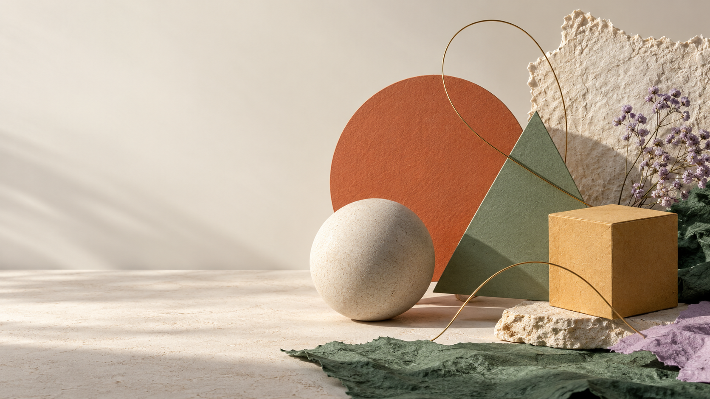

Line
A line creates a path, boundary or direction. Its thickness and style can communicate energy or calm.
03 / THE BUILDING BLOCKS
Elements are the visual ingredients. Principles describe how we arrange them.

A line creates a path, boundary or direction. Its thickness and style can communicate energy or calm.
A shape is a two-dimensional enclosed area. Geometric shapes are regular; organic shapes tend to be irregular.
Texture suggests how a surface looks or feels. Repeated marks can create a rough visual texture on a flat screen.
Space includes the occupied area and the empty area around it. Negative space can improve clarity and draw attention to a focal point.
Form has or suggests three dimensions: height, width and depth. Light and shading can make a flat drawing appear solid.
Value describes how light or dark a colour is. Value differences can establish depth, emphasis and readable contrast.
Colour can group information, suggest a mood or draw attention, but its meaning depends on context and audience. A colour decision should also consider contrast and reproduction on screen or paper.
Typography is the selection and arrangement of type. Typeface, weight, size, line length, line spacing and letter spacing affect both expression and readability. Although typography is sometimes treated separately from the basic visual elements, it is central to graphics design.
| Distinction | Explanation |
|---|---|
| Shape versus form | A square is a flat shape; a shaded cube suggests three-dimensional form. A screen illustration can suggest depth without physically having it. |
| Texture versus pattern | Texture suggests a surface quality. A pattern is a repeated arrangement; repeating marks can create a visual texture. |
| Positive versus negative space | Positive space contains the subject or visual material. Negative space surrounds or separates it and can itself form a meaningful shape. |
| Hue versus value | Hue identifies a colour family; value describes lightness or darkness. Different hues can have similar values and therefore weak light–dark contrast. |
| Line weight versus line direction | Weight affects visual strength; direction can suggest stability, movement or tension. These are related but different properties. |
| Decision | Reason |
|---|---|
| Choose a clear hierarchy | Distinguish title, section headings and body text without making every line equally prominent. |
| Limit unnecessary variation | Too many typefaces and decorative effects can undermine consistency. |
| Use readable body text | Test actual viewing size, line spacing and background contrast rather than choosing by appearance alone. |
| Align deliberately | A shared edge makes related text easier to scan. Avoid accidental changes between alignments. |
| Avoid stretching letterforms | Use proper type weights and sizes rather than distorting text horizontally or vertically. |
| Keep important text as text where practical | Selectable text is generally easier to search, resize and access than text baked into an image. |